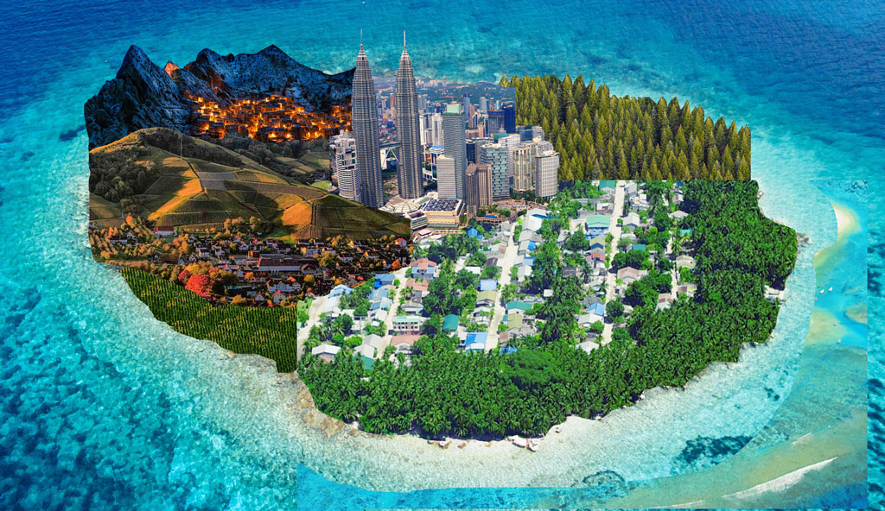

Photoshoped by Qian Ting Huang
References:
Photo by invisiblepower from Pexels
Photo by Ibrahim Asad from Pexels
 Photo by Pixabay from Pexels
Photo by Pixabay from Pexels
 Photo by Christian Heitz from Pexels
Photo by Christian Heitz from Pexels
 Photo by Vincent Liew from Pexels
Photo by Vincent Liew from Pexels
 Photo by Brandon Montrone from Pexels
Photo by Brandon Montrone from Pexels